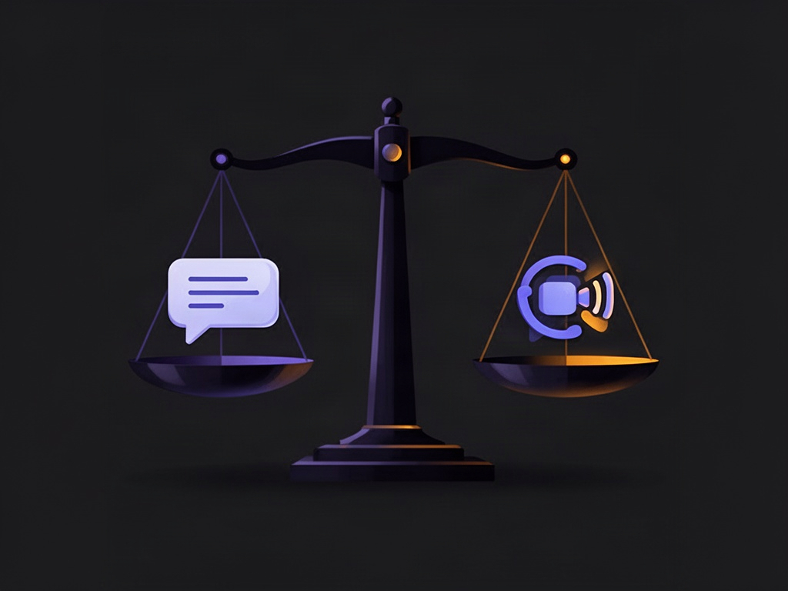

Você manda uma mensagem às 14h03. Às 14h08 ainda não teve resposta. Cinco minutos. E ainda assim, em muitos times remotos, esse intervalo já é o suficiente pra acender um alerta mental: "cadê essa pessoa?". O problema não é a pessoa. É o modelo mental que você trouxe do escritório sem perceber.
No presencial, ver alguém na cadeira era prova de trabalho — um atalho visual, imperfeito mas intuitivo. Quando esse atalho desaparece no remoto, muita liderança tenta reconstruí-lo digitalmente: bolinha verde do chat sempre acesa, resposta em minutos, ligação sem aviso, cobrança de status o dia inteiro. É a mesma lógica de vigilância, só que reencarnada em notificação.
O nome disso já existe, e a pesquisa é grande
Existe até um termo pra parte desse fenômeno: productivity paranoia. Uma pesquisa da Microsoft encontrou algo revelador — 85% dos líderes disseram que o trabalho híbrido dificultou saber se as pessoas estavam sendo produtivas, mesmo com os próprios funcionários relatando produtividade normal ou maior. Ou seja: a percepção de queda de produtividade é, em boa parte, uma crise de visibilidade — não uma crise de entrega.
É fácil entender por que isso empurra gestores pra usar velocidade de resposta como substituto de produtividade real. É mensurável, é imediato, e dá a falsa sensação de controle. O problema é que, pra trabalho intelectual — principalmente desenvolvimento de software — isso tende a produzir exatamente o efeito contrário do que se busca.
Disponibilidade não é produtividade
Essa é a regra mais importante pra qualquer time remoto saudável, e ela raramente é dita em voz alta. Quando um desenvolvedor precisa interromper o raciocínio toda vez que uma mensagem chega, isso não é "ser colaborativo" — é fazer context switching constante. A American Psychological Association resume décadas de pesquisa mostrando que alternar de tarefa repetidamente tem custo cognitivo real, e esse custo cresce junto com a complexidade da tarefa. Programação, arquitetura, debugging, escrita e análise estão exatamente entre as tarefas mais sensíveis a essa fragmentação.
Dados de telemetria do Microsoft 365 dão a dimensão exata do problema: em média, trabalhadores sofreram uma interrupção — reunião, e-mail ou notificação — a cada dois minutos durante o expediente. A própria Microsoft associa essa fragmentação à dificuldade crescente de encontrar blocos de trabalho concentrado. Do outro lado, pesquisas internas da Microsoft Research mostram que bloquear distrações ativamente aumenta a percepção de foco profundo e de produtividade.
Então, quando uma cultura de time trata "mandei às 14h03, são 14h08 e ele não respondeu" como sinal de problema de performance, ela está, na prática, incentivando interrupção contínua — o oposto do que qualquer gestor diria que quer.
Assíncrono por padrão, síncrono quando necessário
Uma liderança remota madura tende a inverter essa lógica. O GitLab é um dos casos mais documentados nessa área, justamente por operar remoto há muitos anos: o manifesto remoto da empresa recomenda explicitamente não tentar reproduzir o escritório dentro do remoto, e defende escolher o canal de comunicação conforme a urgência real — evitando tirar alguém do fluxo de trabalho quando a questão pode esperar minutos ou horas. A lógica por trás é simples: comunicação assíncrona permite que a pessoa responda quando consegue processar aquela informação com qualidade, não necessariamente em tempo real.
A Microsoft chega numa conclusão parecida por outro caminho: colaboração assíncrona bem estruturada reduz a necessidade de reuniões e permite que cada pessoa analise informação no próprio ritmo.
Isso não significa que ninguém precisa responder ninguém. Significa substituir uma expectativa invisível de disponibilidade permanente por um SLA de comunicação explícito.
Um SLA de comunicação pra time de tecnologia
Um desenho razoável separa a urgência real por categoria, em vez de tratar toda mensagem como igualmente urgente:
- Incidente de produção — ligação, sistema de plantão, canal específico. Resposta imediata de quem está de plantão.
- Bloqueio real de outra pessoa — mensagem marcada como urgente, com expectativa de 15-30 minutos durante o expediente.
- Pergunta normal no chat — resposta dentro de algumas horas.
- Code review — SLA definido pelo time, tipicamente até 24h ou no mesmo dia útil.
- E-mail/documentação — até um dia útil.
- Assunto complexo — vira issue, ticket ou documento, não uma sequência de trinta mensagens no chat.
O efeito prático disso é decisivo: a urgência deixa de ser determinada pela ansiedade de quem mandou a mensagem.
Avaliar resultado, não presença
Numa liderança de engenharia saudável, as perguntas que realmente importam são outras: o que esperamos que essa pessoa entregue? O projeto está avançando? As responsabilidades estão claras? A qualidade está adequada? Os compromissos estão sendo cumpridos? Se a resposta for sim pra todas, o fato de alguém ter levado 35 minutos pra responder uma mensagem tem importância próxima de zero.
Quando um gestor precisa perguntar continuamente "onde você está", "viu minha mensagem", "está fazendo o quê", isso quase sempre denuncia falta de sistema de gestão — não falta de disciplina do time. O GitLab resolve boa parte disso tornando o trabalho visível estruturalmente: issues, merge requests e decisões documentadas substituem a necessidade de perguntar status. Trabalho assíncrono exige que a informação não fique presa na cabeça de alguém ou num chat privado — ela precisa estar registrada em algum lugar consultável.
Acompanhamento não é a mesma coisa que microgerenciamento
É possível acompanhar bastante sem microgerenciar. A diferença fica clara quando você compara os dois padrões de comunicação lado a lado:
| Acompanhamento saudável | Microgerenciamento |
|---|---|
| "Essa é a prioridade, esse é o prazo" | "Já começou? Está em qual arquivo?" |
| "Esse é o resultado esperado, esses são os riscos" | "Por que ficou offline? Por que demorou 15 minutos?" |
| "Me avise se ficar bloqueado" | "Compartilha a tela. Terminou? E agora? E agora?" |
| "Vamos revisar na quarta-feira" | Verificação contínua e em tempo real |
A pesquisa sobre o tema descreve exatamente esse padrão: gestores ansiosos tendem a fazer perguntas excessivas, verificar o trabalho com frequência demais e oferecer intervenção em excesso — enquanto, ao mesmo tempo, reclamam que o time não tem autonomia suficiente. É um ciclo que se retroalimenta: quanto mais o gestor verifica, menos espaço o time tem pra desenvolver autonomia, o que "confirma" a ansiedade do gestor. Estudos também associam microgerenciamento e falta de controle sobre o próprio trabalho a estressores ocupacionais reais — não é só uma questão de "clima do time", é um fator mensurável de burnout. Até órgãos profissionais de RH já recomendam que qualquer monitoramento de equipe seja desenhado de forma construtiva, evitando exatamente esse padrão de erosão de confiança.
Um contrato de trabalho remoto, na prática
Um conjunto de princípios que costuma funcionar bem pra formalizar isso com um time de tecnologia:
- Assíncrono é o padrão. Uma mensagem não implica interrupção imediata.
- Urgência precisa ser explícita. Se tudo é urgente, nada é urgente.
- Emergência tem canal próprio. Incidente crítico não pode depender de alguém perceber uma mensagem perdida no chat.
- Calendário e status são respeitados. Foco bloqueado, reunião marcada e "não perturbe" significam indisponibilidade deliberada, não falta de educação.
- Trabalho precisa ser visível. Tickets, PRs, decisões documentadas reduzem a necessidade de perguntar status o tempo todo.
- Avalia-se resultado. Entrega, qualidade, previsibilidade e colaboração são métricas muito melhores que bolinha verde.
- Existem janelas de colaboração síncrona. Um bloco de manhã e outro de tarde com maior expectativa de disponibilidade, sem transformar o dia inteiro em plantão de chat.
- 1:1 serve pra alinhamento, não fiscalização.
- Reunião existe quando o síncrono realmente acrescenta algo — não como padrão default.
- O líder protege o foco do time, funcionando como filtro pra que cada demanda externa não interrompa individualmente cada desenvolvedor.
Assíncrono não é religião

Vale uma ressalva que fortalece o argumento em vez de enfraquecê-lo: existem situações em que síncrono é claramente melhor. Uma decisão arquitetural controversa costuma se resolver em vinte minutos de call em vez de dois dias de troca de mensagens. Pair programming é inerentemente síncrono. Incidente crítico é síncrono. Uma conversa delicada, quase sempre, deveria ser síncrona também.
A pesquisa sobre trabalho remoto tampouco afirma que "remoto é sempre melhor" de forma simplista. Existem problemas reais de coordenação, conexão social e colaboração quando o modelo é mal estruturado — estudos já documentaram mudanças nas redes de colaboração durante a transição para o remoto, incluindo maior dependência de comunicação assíncrona nem sempre bem calibrada. O desenho do trabalho e a qualidade da liderança continuam sendo os fatores decisivos dos resultados, não o formato (remoto ou presencial) em si.
O argumento que realmente vale a pena defender
A discussão nunca deveria ser enquadrada como "não quero responder meu chefe". Isso é fácil de rebater e coloca a conversa no terreno errado. O enquadramento certo é outro: estabelecer uma política objetiva de comunicação que diferencie emergência, bloqueio real e comunicação normal — porque exigir resposta instantânea de forma indiscriminada aumenta interrupções, prejudica entrega, e transforma presença no chat numa métrica de produtividade que não mede produtividade nenhuma.
Isso deixa de ser uma discussão sobre preferência pessoal. Vira uma discussão de design organizacional — e, pra um time de engenharia, design organizacional é tão parte da arquitetura do sistema quanto qualquer decisão técnica.